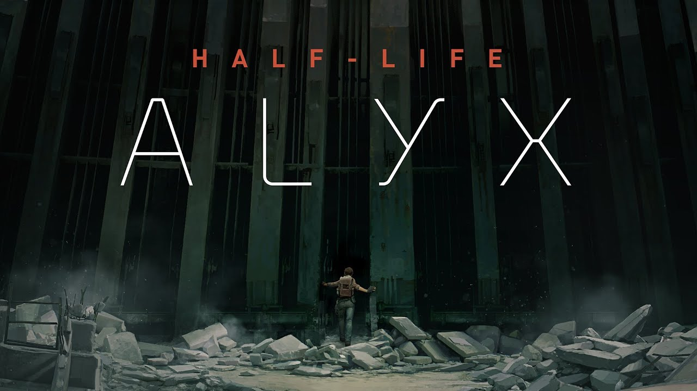

HALF LIFE y su rotundo exito en el mercado
HALF LIFE la creacion que fue algo mas que un juego.
no solo revoluciono los FPS sino que revoluciono la forma de jugar un "FPS"(FIRST PERSON SHOOTER) o tambien conocido como disparos en primera persona
aunque no lo creas este juego fue lanzado en 1998 basicamente una obra antes de los 2000,
en esos momentos tenian FPS como DOOM y WOLFENSTAIN¿que tenian en comun? avanzar,disparar y resolver rompecabezas,Half Life revoluciono esto con el
motor GOLDEN SOURCE el cual era capaz de generar modelos en 3D
y generar inteligencia en los personajes no jugables(NPC) y una historia que parecia sacada de un libro de ciencia ficcion el juego fue distribuido
por VALVE, industria de videojuegos y dueño de unas de las tiendas de videojuegos mas utilizadas(STEAM).
HALF LIFE tuvo gran exito siendo unos de los juegos mas descargados y ganador del GAME AWARD este titulo estuvo disponible en cibers y en computadoras del gobierno
sinceramente se podria decir que fue descargado por casi todo el mundo
este juego paso en manos de todos y actualmente las personas siguen esperando la tercera
entrega de este videojuego tan conocido y valorado por la comunidad de jugadores en todo el mundo.
en 2003 fue filtrado por un adolecente aleman fanatico del primer videojuego, por aburrimiento decidio hackear las oficinas de VALVE con la finalidad de descubrir
si existia el supuesto HALF LIFE 2,
de aqui es donde viene la historia de la supuesta filtracion a las oficinas de VALVE.

16 de noviembre de 2004 lanzmiento oficial de HALF LIFE 2,la sorpresa para todos los fanaticos y personas no fanaticas el realismo que tenia HALF LIFE 2 y su motor
SOURCE ENGINE con sus fisicas realistas,
la capacidad de agarrar cualquier objeto al alcance,los movimientos y expreciones realistas los movimientos realistas de
las caras de los personajes y la historia que logro intrigar a todas las personas si bien no fue tan reconocido
como su predecesor HALF LIFE 1, fue impresionante el realismo que logro en tan pocos años que varios juegos no habian llegado.
inicialmente se penso en lanzar HALF LIFE 2 en episodios cada año pero penso que eso no funcionaria para los fanaticos de esta saga.
años despues fue confirmado que el escritor de HALF LIFE Mark Laidlow dejo de trabajar en VALVE
y publico en las redes una historia llamada EPISTLE 3 el cual era un supuesto guion de HALF LIFE 3 pero a los fanaticos de esta gran saga este final les dejo mal sabor de boca y a algunos les parece que es un poco oscuro este final

EPISTLE 3 comienza como dode termino el HALF LIFE 2 episodio 2 con la muerte de eli vance, gordon y alyx llegando hacia el borealis etc.
este final concluye con gordon siendo transportado a un transbordador y impotente se arrodilla
al ver el gran poder que tiene los combine a su disposision capaces de controlar su propio planeta y utilizando una esfera de dyson la fuente de poder mas grande del universo y con esto Gordon se rinde al ver que ellos pueden controlar un planeta,
mientras que la humanidad solo es capas de controlar casi nada de poder de su planeta,sinceramente un final oscuro y triste para una saga tan querida
por suerte el fina cambio en el HALF LIFE Alyx con uno que deja mas preguntas que respuestas.
el 23 marzo de 2020 se lanzo Half Life Alyx, actualmente el proyecto mas reciente de valve, los fanatico esperando con ancias el videojuego de Half Life,casi 15 años desde
el HALF LIFE 2 episodio 2,la historia de este HALF LIFE
esta basado en lo que vivio Alyx antes de que Gordon llegara, pero un inprevisto de G-MAN fue el detonante para
alterar la linea temporal de HL2E2 y HL-Alyx la muerte de eli vance fue anulada y el contrato de Gordon con G-MAN a sido alterado
y ahora eli vance no tiene miedo de hablar sobre la existencia de G-MAN y las palabras que le dijo a eli en black mesa "preparate para las consecuencias imprevistas"
y el juego termina con Gordon sosteniendo su mitica palanca y dejando todo con una incognita que tendra años hasta ser respuesta.

los personajes que encarnan esta historia de ciencia ficcion son:
Gordon Freeman (cientifico de black mesa)
es el encargado de cerrar la coneccion con xen,
y en la segunda entrega mas especificamente HL2E2
es cuando cierra el enlace con los combine con un
cohete dirigido por su antiguo colega de black mesa
arne magnusson el creador del dispositivo magnusson.
Isaac kleiner (cientifico de black mesa)
el viego colega de gordon en black mesa isaac kleiner
nos ayuda al comienzo del juego de HL2 con el
teletransportador para llevarlo a black mesa del este
pero su esperimento falla llevando a gordon a las
oficinas de wallace breen.
Eli vance (cientifico de black mesa)
antiguo colega de black mesa el cual
nos ayuda a lo largo del juego pero que en HL2E2
muere en los brazos de alyx vance final que fue
alterado en HALF LIFE ALYX con una incognita muy grande
para half life 3.
Barney calhoun (guiardia de black mesa)
colega guardia de black mesa que en HL2 nos ayuda en
varios puntos del juego siendo el personaje que nos
entrega nuestra mitica palanca al protagonista,
actualmente su ultimo avistamiento fue en HL2E1
no se sabe su paradero ni si sigue vivo o murio en algun
punto de la historia.
Judith mossman (pasante de black mesa)
se desconoce las intenciones de este personaje,
es admiradora de lo que a hecho gordon freeman,
y secuestra a eli vance 1 vez para que mas adelante
escape hacia el borealis, la intencion del half life 3
es ir el borealis en el elicoptero al final de HL2E2
lo cual no va ser posible debido a que ahora esta cambiada
la linea temporal
Alyx vance (hija de eli vance)
la hija de eli vance tiene un rol de personaje secundario
dentro de HL2,HL2E1,HL2E2 esta ayuda en muchos puntos
a gordon esta toma protagonismo en el HALF LIFE ALYX siendo
contratada por G-man y cambiando los sucesos de HL2E2 dejando
libre a gordon de el contrato con G-man.
Wallace breen (administrador de black mesa)
el administrador de black mesa el cual fue el que se declaro
representante de la tierra haciendo que esta se rinda ante
las fuerzas combine desencadenando "la guerra de las 7 horas"
este es derrotado por freeman en el final de half life 2
destruyendo el teletransportador hacia el overworld.
G-MAN (ser fuera del conocimiento humano)
lo unico que se conoce de G-man es que realizo un contrato con
freeman haciendo que este este bajo su cargo no es hasta HL2E1
que gordon se libera de las ataduras de este siendo liberado
por un tercer poder controlado por los vortigaunts,este hace
hace apariciones en todo el juego evalundo a sus sujeto
Dog (mascota de alyx vance)
es la mascota de Alyx vance creado por eli vance este nos ayuda
a lo largo del juego a derrotar combines con su fuerza mecaninca
y es el que nos encuentra en el comienzo de HL2E1 luego de la
secuencia de G-man y es el que nos entrega nuestra palanca en
el final de HALF LIFE ALYX.
arne magnusson (colega de gordon)
es un colega de black mesa al cual nos recordara que nosotros le
explotamos su casuela en HALF LIFE 1, este no dice que podemos ser
perdonados por lo de black mesa si le ayudamos probando un dispositivo
posteriormente nos presenta el dispositivo magnusson el cual es un elemento
bastante fuerte el cual es capaz de eliminar a los strider mucho mas facil que
lanzarle misiles teledirijidos del lanzacohetes, mas adelante este es el
responsable de lazar el cohete a la brecha del overworld combine.
Ir a la pagina:
1 2 3 4 5 6 7